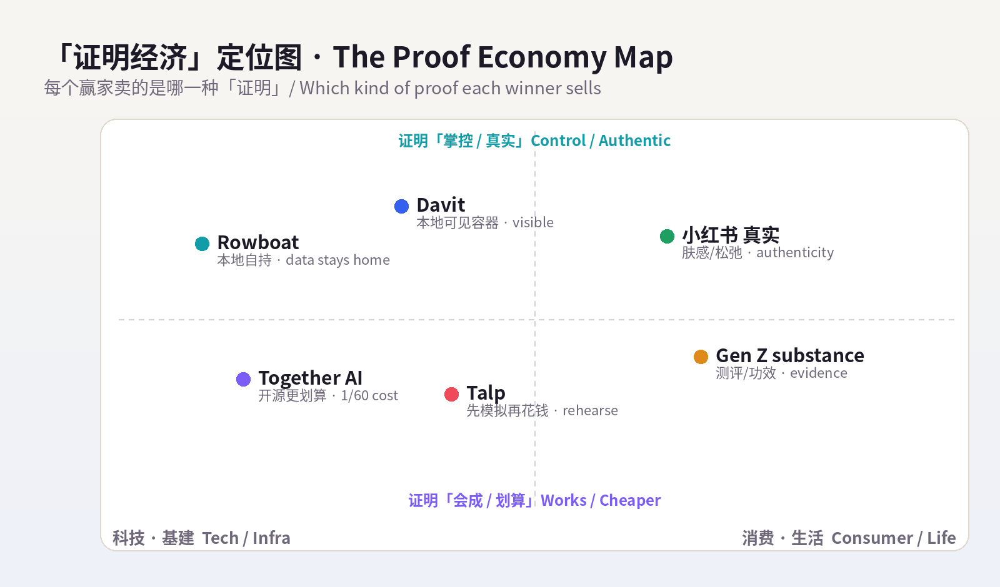
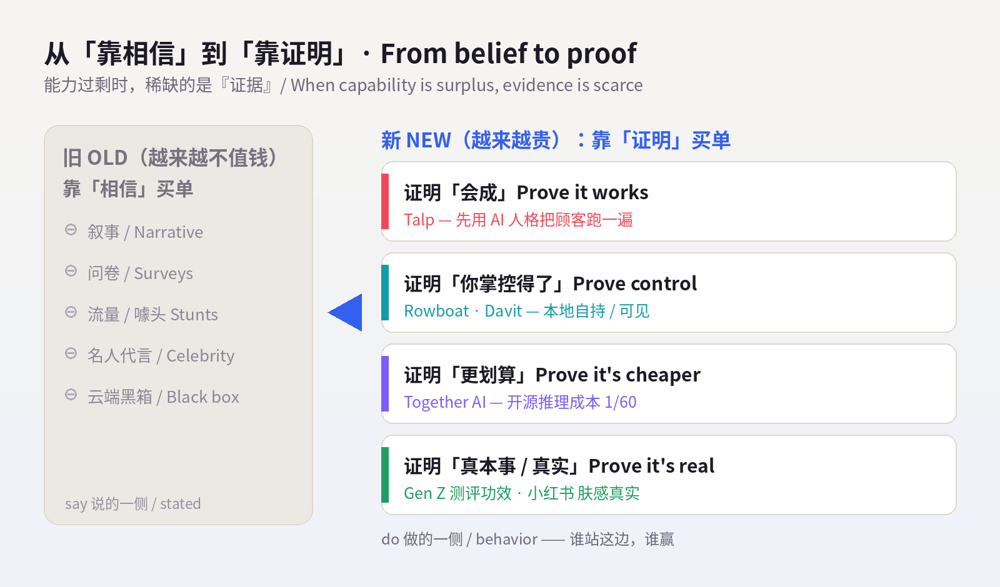
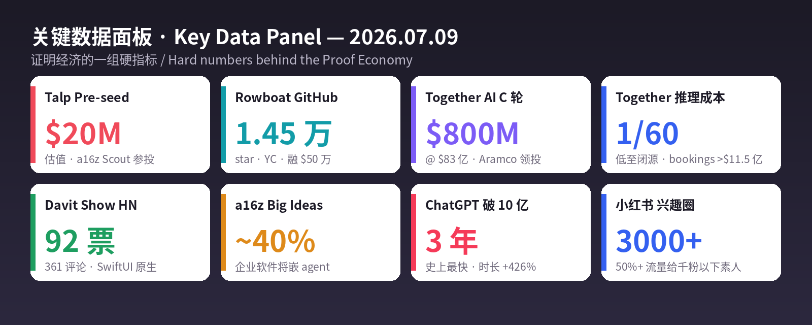

数据来源 / Sources: Hacker News / Show HN（Rowboat「本地版 Claude Cowork」item 48819808；Davit「Apple Containers UI」item 48821848，92 票/361 评论）、TechFundingNews / Dealroom / TheSaaSNews（Talp「模拟人心」pre-seed @ $20M，a16z Scout 参投，2026-07）、TechCrunch / BusinessWire / TheNextWeb（Together AI $800M Series C @ $8.3B，Aramco 领投，2026-07-01）、a16z《Big Ideas 2026》、Sensor Tower《State of AI / State of Mobile 2026》、ContentGrip / House of Marketers（Gen Z「substance over stunt」/ CeraVe）、New Engen（July TikTok「hot dog summer」）、知乎 / TopMarketing / 人人都是产品经理（小红书 2026 趋势：真实松弛、保健品人设、肤感压成分、兴趣圈精细化）。 方法 / Method: WebSearch（US-only）公开检索摘要。web_fetch 对外站被 egress 拦截（allowlist 仅 npm/pypi/github/anthropic 等），Product Hunt / Hacker News / Sensor Tower / X / LinkedIn / 小红书 均为登录墙或客户端渲染，无法直接抓取；统一以新闻、PR、榜单、报告摘要替代，无法获取的原始页面已跳过、未做绕过。为保每日新意，已排除 6/29–7/08 已深度分析过的产品（完整名单见
raw/2026-07-09/sources.md）。 免责声明 / Disclaimer: 本报告为趋势研究，非投资建议。融资 / 估值 / 市场规模 / 份额为第三方公开披露或估算，随时可能变化；量化指标为平台或第三方口径，仅供参考。健康与消费类趋势（保健品、护肤、功能食品）仅作消费现象记录，不构成任何医疗、营养或美容建议。
一句话 / In one line： 昨天的信号是「界面即分发」——占住用户已经在用的那块表面。今天它退到更靠前的一格：当造东西几乎免费、人人都能做出能力，唯一稀缺、真正卖钱的，是『证明』。 证明它会成（先模拟一遍）、证明你能掌控（数据留在自己机器上）、证明它有真本事（开源打赢闭源、消费者要证据而不是噱头）。今天所有赢家都在卖同一样东西——「证据」：Talp 卖「先用 AI 人格把你的顾客跑一遍，证明这波广告/定价会成，再花钱」；Rowboat 卖「AI 同事可以完全跑在你自己机器上，证明你不必把工作大脑交给云端」；Together AI 用 $800M / $83 亿估值 证明「开源推理能把成本砍到闭源的 1/60」；而在消费端，Gen Z 和小红书用户异口同声：「别跟我吹，拿证据来。」
In one line: Yesterday's signal was "surface is distribution." Today it moves one square earlier: when making things is nearly free and anyone can manufacture capability, the scarce, sellable thing is proof. Proof it will work (simulate it first), proof you can control it (keep the data on your own machine), proof it has real substance (open beats closed; consumers want evidence, not stunts). Every winner today sells the same thing — evidence: Talp sells "run your customers through AI personas and prove the campaign works before you spend"; Rowboat sells "an AI coworker that runs entirely on your machine — proof you don't have to hand your work-brain to the cloud"; Together AI's $800M at an $8.3B valuation is proof that "open-source inference can cut cost to 1/60th of closed"; and on the consumer side, Gen Z and Xiaohongshu users say it in one voice: "Don't tell me — show me."
贯穿今天的透镜，是 say-do gap（嘴上说的 vs 真正会做的）。Talp 的整份卖点就是「survey 会骗你、行为不会」——用模拟把两者的差距量出来；而 Gen Z 的「substance over stunt」、小红书的「从表演精致到证明真实」，是同一条鸿沟在消费世界里的镜像：流量噱头买不动货（viral fame isn't enough to win carts），能买动货的，是测评、UGC、临床功效、上身肤感——一句话，是证据。 在一个能力过剩的世界里，竞争从「你能不能做到」「你在不在用户的表面上」，退到了最根上的一格——「你证明得了吗」。谁能把『证明』做成产品，谁就握住了这轮的定价权。
The lens running through today is the say-do gap — what people say versus what they'll actually do. Talp's entire pitch is "surveys lie, behavior doesn't" — using simulation to measure the gap. Gen Z's "substance over stunt" and Xiaohongshu's shift "from performing perfection to proving authenticity" are the same chasm mirrored in the consumer world: viral fame isn't enough to win carts; what wins carts is reviews, UGC, clinical efficacy, the feel on your skin — in a word, evidence. In a world of surplus capability, competition retreats to the most fundamental square of all — "can you prove it?" Whoever turns proof into a product owns the pricing power this round.


五条最强信号 / Five strongest signals
Five signals (EN): (1) Talp (pre-seed @ $20M, a16z Scout) — "We Simulate Human Intent": run thousands of behavioral AI personas through your site / ad / pricing to flag drop-off and price-sensitivity before the money is spent. Selling proof-it-works-first. (2) Rowboat (top Show HN, 14.5K GitHub stars, YC) — weaves email/meetings/Slack into a local knowledge graph, acts via Ollama/LM Studio, data stays on your machine by default — a provably-controllable answer to Claude Cowork. (3) Together AI — $800M @ $8.3B (Aramco-led, Nvidia in), never builds its own model, just runs DeepSeek/Kimi cheaply — inference up to 60× cheaper than closed, bookings past $1.15B. The hardest price-proof yet for "ditch closed, adopt open." (4) Capital only pays for controllable + measurable + proprietary data — a16z: ~40% of enterprise software will embed agents; winners go narrow, own a workflow, show immediate ROI, moat = proprietary data; the 92-point Show HN Davit swaps the cloud black box for a locally-visible Apple-container UI. (5) Consumers: "show me, don't tell me" — Gen Z substance over stunt (trust reviews/UGC/clinical efficacy, not stunts; viral fame won't win carts); Xiaohongshu shifts from performing perfection to proving authenticity — feel/texture out-talks ingredients, supplements as a self-discipline persona prop, 50%+ of traffic to sub-1K-follower creators for hyper-niche depth.

昨天大家还在抢「用户已经在用的那块表面」，今天 Talp 把问题往前推了一整步：在你花一分钱之前，先把顾客「跑一遍」。 它 7 月宣布 pre-seed、估值 $20M（Formus Capital、Sunshine Lake Ventures、Aito Capital 和 a16z Scout Fund 参投），主页只有一句话——「We Simulate Human Intent（我们模拟人的意图）」。产品做的事很具体：给 AI 人格灌进行为模式、决策特质、认知倾向，然后把上千个这样的「合成顾客」放进你的网站、广告或定价场景里真的跑一遍，预测他们会怎么做、以及为什么。它精准打的是市场研究几十年的老痛——say-do gap（说—做鸿沟）：人们在问卷里说的，和真掏钱时做的，往往是两回事。Talp 的逻辑是「survey 会骗你，模拟出来的行为不会」：一个 persona 可以在广告上线前，把 checkout flow 从头走一遍，标出到底在哪个价位、哪一步，购物车被弃掉。 这就是「证明经济」最纯粹的样子——把「证明它会成」本身做成一个可以按次运行的产品。 需要提醒的是，这条赛道「投资胃口跑在营收前面」（同类 Aaru 顶着十亿美元估值、ARR 却只有个位数百万），合成人格能多大程度替代真实用户，仍需时间证明——但方向已经足够清楚：在能力过剩的时代，能把「预演现实」卖出去，就是最稀缺的生意。
Yesterday everyone fought for "the surface the user already uses"; today Talp pushes the question a full step earlier: rehearse your customers before you spend a cent. Announced in July at a $20M pre-seed valuation (Formus Capital, Sunshine Lake Ventures, Aito Capital, and the a16z Scout Fund), its homepage is one line — "We Simulate Human Intent." The product is concrete: it loads AI personas with behavioral patterns, decision traits, and cognitive tendencies, then runs thousands of these synthetic customers through your site, ad, or pricing scenario to predict what they'll do and why. It targets a decades-old pain in market research — the say-do gap: what people say in a survey and what they do when real money is on the line are often two different things. Talp's logic is "surveys lie, simulated behavior doesn't": a persona can walk the entire checkout flow before an ad goes live and flag exactly which price point and which step makes the cart get abandoned. This is the Proof Economy in its purest form — turning "prove it will work" itself into a product you can run on demand. A caveat: here investor appetite has outpaced revenue (peer Aaru carries a billion-dollar headline against single-digit-million ARR), and how far synthetic personas can stand in for real users still needs proving — but the direction is clear enough: in an age of surplus capability, selling "a rehearsal of reality" is the scarce business.
| 维度 Dimension | 分析 Analysis |
|---|---|
| 商业模式 Business model | 合成用户研究平台，按 persona/场景/次数计费，替代问卷与小样本调研。Synthetic-research SaaS; replaces surveys. |
| 核心价值 Core value | 在花钱之前「预演现实」：用 AI 人格量出 say-do gap，标出弃购/价格敏感点。Rehearse reality; measure the say-do gap. |
| 成功因素 Success | 打到市场研究的老痛点 + LLM 让「行为模拟」第一次便宜可跑 + a16z Scout 背书 + 一句话定位极清晰。Old pain × cheap simulation × sharp positioning. |
| 核心功能 Core features | 行为化 AI 人格、批量跑 checkout/落地页/定价、反应/原因预测、A/B 前置模拟。Behavioral personas, bulk flow-simulation. |
| 细分市场 Niche | 合成客户研究 / 上线前测试（synthetic customer research）。Pre-launch synthetic research. |
| 目标受众 Audience | 增长/产品/营销团队、电商与 DTC、需在投放前做决策的人。Growth/product/marketing, e-commerce. |
| 品牌设计 Brand | 名「Talp」极简；主张「We Simulate Human Intent」一句话立心智，冷静科技调性。Minimal, thesis-led. |
| 产品数据 Data | pre-seed @ $20M 估值；a16z Scout 等参投；2026-07 宣布；主打「replace surveys」。 |
| 链接 Link | talp.ai · TechFundingNews · Dealroom |
| 评论摘要 Reviews | 正面：「上线前就能看到弃购点、比问卷靠谱、省预算」；关注点：合成人格的效度/偏差、能否真替代真实用户、估值跑在营收前面。Praise for pre-launch signal; watch validity vs. real users. |
如果 Talp 证明「它会成」，Rowboat 证明「你掌控得了」。它本周以 Show HN 亮相、迅速冲上热门（GitHub 已 1.45 万 star、1.5k fork，YC 背书、已融 $50 万），一句话定位是「开源、本地优先的 Claude Cowork 平替」。做法是：把你的 Gmail、日历、会议记录、Slack、助手对话抽取成人物/项目/决策/承诺，写成 Obsidian 式反链知识图谱；再用你自己选的引擎——Ollama、LM Studio 或托管 LLM——在这张图谱上行动：起草、排程、生成 PDF deck、出语音简报。它还能挂后台 agent（新邮件触发、或每天早八点定时跑），连工具、搜网、开浏览器、用 Claude Code/Codex 写代码；本地会议记录器直接吃麦克风和扬声器，实时转写、总结、回写图谱。它最锋利的一点不是功能，而是立场——「data sovereignty / 本地优先」：所有数据默认留在你自己机器上。 这正是「证明经济」的另一面：在一个把工作大脑往云端搬的时代，Rowboat 把「你不必把命脉交出去也能用上 AI」这件事，做成了可安装、可审计、开源可验的证明。 它对标的不是某个功能点，而是「云端黑箱」本身——当别人让你相信，Rowboat 让你自己看得见。
If Talp proves "it will work," Rowboat proves "you can control it." Launched this week as a Show HN and quickly trending (14.5K GitHub stars, 1.5K forks, YC-backed, $500K raised), it pitches itself as "the open-source, local-first alternative to Claude Cowork." The mechanism: it extracts people / projects / decisions / commitments from your Gmail, calendar, meeting notes, Slack, and assistant chats into an Obsidian-style backlinked knowledge graph, then acts on that graph with an engine you choose — Ollama, LM Studio, or a hosted LLM — drafting, scheduling, generating PDF decks, producing voice briefs. It runs background agents (triggered by a new email, or on a schedule like 8 a.m. daily) that call tools, search the web, drive a browser, and write code via Claude Code / Codex; a local note-taker taps mic and speaker to transcribe, summarize, and write back to the graph live. Its sharpest edge isn't a feature — it's a stance: data sovereignty / local-first, with all data staying on your machine by default. That's the other face of the Proof Economy: in an era of shipping your work-brain to the cloud, Rowboat turns "you don't have to surrender the crown jewels to use AI" into an installable, auditable, open-source-verifiable proof. It competes not with a feature but with the cloud black box itself — where others ask you to trust, Rowboat lets you see.
| 维度 Dimension | 分析 Analysis |
|---|---|
| 商业模式 Business model | 开源起步（心智+社区），可向团队版/托管/企业支持延伸。OSS now; team/hosted/enterprise later. |
| 核心价值 Core value | 本地自持的 AI 同事：知识图谱 + 自选引擎，数据默认不出机器。Local-first coworker; your data stays home. |
| 成功因素 Success | 踩中「data sovereignty」焦虑 + 反链图谱(Obsidian 心智) + 引擎自选(不锁定) + 开源可验 + YC/star 势能。Sovereignty × open × momentum. |
| 核心功能 Core features | 邮件/会议/Slack→反链图谱、后台事件/定时 agent、本地会议记录器、PDF/语音输出、Claude Code/Codex 写码。Graph + agents + local notetaker. |
| 细分市场 Niche | 本地优先的个人/团队 AI 操作系统（local-first AI coworker）。Local-first AI OS. |
| 目标受众 Audience | 重隐私的开发者/知识工作者、不想被云端锁定的团队、Obsidian/自托管人群。Privacy-first devs & teams. |
| 品牌设计 Brand | 名「Rowboat（划艇）」隐喻「自己划、自己掌舵」；开源、极客、反黑箱调性。Self-steer metaphor; anti-black-box. |
| 产品数据 Data | GitHub 14.5k star / 1.5k fork；YC 背书、融 $50 万；SF、2024 成立、5 人；本周 Show HN 热门。 |
| 链接 Link | github.com/rowboatlabs/rowboat · rowboatlabs.com · Show HN |
| 评论摘要 Reviews | 正面：「终于能本地跑、数据不出机器、图谱能在 Obsidian 里打开太安心」；关注点：本地模型效果/算力门槛、图谱维护成本、商业化路径。Praise for local + graph; watch local-model quality. |
前两个证明「会成」「可控」，Together AI 证明的是「开源真的更划算」——而且用一张 $800M / $83 亿估值的支票把它钉死。7 月 1 日，它宣布 $800M C 轮，Aramco Ventures 领投，Vista、General Catalyst、Emergence、Nvidia、March Capital、Pegatron、S Ventures 跟投；估值 16 个月从 $33 亿翻到 $83 亿。它的模式反直觉却极清晰：从不自研基座模型，只做一层云基建，让企业廉价、大规模地跑别人的开源模型——DeepSeek、MiniMax、Kimi。它给出的「证据」是价格：宣称推理成本能比 OpenAI/Anthropic 这类闭源方案低到 1/60，而年度 bookings 已越过 $11.5 亿。这正是「证明经济」在基建层的样子——企业不再为「谁的模型最强」这种叙事买单，而为一张能对齐财务的账单买单：同样的活，开源方案便宜数十倍。 它计划用这笔钱把推理平台、算力在五年内扩约 50×。放在今天的主线里：Talp 证明需求侧、Rowboat 证明掌控侧、Together 证明成本侧——三条腿都指向同一句话：这轮不再靠「相信」赢，靠「证明」赢。
The first two prove "it works" and "you control it"; Together AI proves "open is genuinely cheaper" — and nails it down with an $800M / $8.3B check. On July 1 it announced an $800M Series C led by Aramco Ventures (with Vista, General Catalyst, Emergence, Nvidia, March Capital, Pegatron, S Ventures), its valuation more than doubling from $3.3B to $8.3B in 16 months. The model is counterintuitive but crisp: it never builds a foundation model, just the cloud layer that lets enterprises run other people's open-source models cheaply and at scale — DeepSeek, MiniMax, Kimi. Its evidence is price: it claims inference up to 60× cheaper than closed options from OpenAI/Anthropic, with annual bookings past $1.15B. This is the Proof Economy at the infrastructure layer — enterprises no longer pay for the narrative of "whose model is strongest," but for a bill that reconciles on the P&L: same job, dozens of times cheaper on open. It plans to scale inference and compute roughly 50× over five years. In today's throughline: Talp proves the demand side, Rowboat the control side, Together the cost side — three legs pointing at one sentence: this round is won not by belief, but by proof.
| 维度 Dimension | 分析 Analysis |
|---|---|
| 商业模式 Business model | 开源模型推理/训练云（neocloud）：按算力/token 计费，走量。Open-model inference cloud; usage-priced. |
| 核心价值 Core value | 让企业廉价跑开源模型，推理成本称最高低至闭源 1/60。Run open models cheaply; up to 60× cheaper. |
| 成功因素 Success | 押中「弃闭投开」大势 + 不做模型只做基建（中立） + 价格可量化证据 + Aramco/Nvidia 背书。Open wave × neutral infra × price-proof. |
| 核心功能 Core features | DeepSeek/MiniMax/Kimi 等开源模型的训练与推理、成本优化、规模化部署。Train/serve open models at scale. |
| 细分市场 Niche | 开源模型的推理基建层（open-model neocloud）。Open-model neocloud. |
| 目标受众 Audience | 想降本、避免闭源锁定的企业与开发者、AI 原生公司。Cost-cutting, lock-in-averse enterprises. |
| 品牌设计 Brand | 名「Together」呼应开源协作；定位「让前沿 AI 人人可及」。Collaborative, access-for-all. |
| 产品数据 Data | $800M C 轮 @ $83 亿（Aramco 领投、Nvidia 参投）；bookings >$11.5 亿；成本低至 1/60；拟扩算力 ~50×/5 年；2026-07-01。 |
| 链接 Link | TechCrunch · BusinessWire · TheNextWeb |
| 评论摘要 Reviews | 正面：「开源推理终于能对齐财务、中立不锁定、省得夸张」；关注点：neocloud 价格战/毛利、对开源模型质量的依赖、算力扩张的资本消耗。Praise for cost & neutrality; watch margins & capex. |
把今天的产品拉远看，会看到同一条资金与注意力的流向：凡是能「证明」的，就有人买单；只会「叙事」的，正在被跳过。 a16z《Big Ideas 2026》给出方向——2026 是 agentic systems 之年，约 40% 企业软件将嵌入任务专用 agent，但真正有 traction 的赢家「走窄、占住一条 workflow、给出立刻可量化的 ROI」，从「价值一眼可见、买家能立刻justify花钱」的受限问题切入；而能立住的护城河，是自有的高质量专有数据（它点名 VLex、OpenEvidence 作样本）。同一天的 Show HN，Davit（92 票 / 361 评论）用另一种方式讲同一件事：它是给 Apple 容器写的原生 macOS UI（Apple silicon 上跑 Linux 容器、Docker Desktop 平替），直连 container-apiserver、无 Electron、MIT 开源——把「云端黑箱」换成「本地可见、每个容器的 CPU/内存/IP 都摆在眼前」的可掌控界面。 再叠上 Sensor Tower 的量：ChatGPT 史上最快破 10 亿月活（3 年）、时长 +426%、20 万+ App 描述含 AI、AI App 上半年约 100 亿下载。需求是真的、钱是真的，但钱越来越挑——它只流向能证明「我掌控得了、我能量化、我有别人没有的数据」的地方。 Together 的 $800M、Talp 的 a16z Scout、Rowboat 的 star，都是同一张选票。
Zoom out from today's products and the same flow of money and attention appears: whatever can be proven gets funded; whatever only narrates is being skipped. a16z's Big Ideas 2026 sets the direction — 2026 is the year of agentic systems, with ~40% of enterprise software expected to embed task-specific agents, but the winners with real traction go narrow, own one workflow, and show immediately measurable ROI, starting from constrained problems where "value is obvious and the buyer can justify spend fast"; the durable moat is proprietary, high-quality data (it names VLex and OpenEvidence). The same week's Show HN, Davit (92 points / 361 comments), tells the same story another way: a native macOS UI for Apple's containers (Linux-on-Apple-silicon, a Docker Desktop alternative), talking straight to container-apiserver, no Electron, MIT-licensed — swapping the cloud black box for a controllable surface where every container's CPU/memory/IP is right in front of you. Layer on Sensor Tower's numbers: ChatGPT the fastest app ever to 1B MAU (3 years), time spent +426%, 200K+ apps mentioning AI, ~10B AI-app downloads in H1. Demand is real and money is real — but the money is increasingly picky: it flows only to what can prove "I'm controllable, I'm measurable, I own data others don't." Together's $800M, Talp's a16z Scout, Rowboat's stars — all the same ballot.
| 信号 Signal | 数据 Data | 证明了什么 What it proves |
|---|---|---|
| a16z《Big Ideas 2026》 | ~40% 企业软件将嵌 agent；赢家走窄+可量化 ROI+自有数据 | 资本只买「可量化 + 专有数据」/ Pays for measurable ROI & proprietary data |
| Davit（Show HN） | 92 票 / 361 评论；SwiftUI 原生、直连 XPC、MIT | 开发者要「本地可见、可掌控」/ Devs want local visibility & control |
| Sensor Tower | ChatGPT 3 年破 10 亿 MAU、时长 +426%；AI App H1 ~100 亿下载 | 需求是真的、且在加速 / Demand is real and accelerating |
| Together AI | $800M @ $83 亿、成本 1/60、bookings >$11.5 亿 | 「开源更划算」的价格证据 / Price-proof that open is cheaper |
「证明经济」不只在科技圈——它同样在改写消费。2026 年欧美消费最清晰的一句话是：「viral fame isn't enough to win carts（爆红也带不动购物车）」。 Gen Z 对品牌的要求，从「slogan / 噱头 / 名人代言」退到「substance（真本事）」：一致性、真诚、真实价值。他们买单前要的是证据链——信 peer review、UGC、creator-led 实测演示，胜过任何品牌自吹；micro/nano 创作者因为「更像真人、更可信」，参与度反而压过头部 KOL。最典型的样本是 CeraVe：不靠明星、靠临床功效 + 皮肤科背书 + functionality over form，成了 Gen Z 心智里的「稳」。有意思的是，这一层和噱头并不互斥——今年 7 月 TikTok 的「hot dog summer」（热狗美甲/蛋糕/周边）照样刷屏，但它只负责「带流量」，真正把流量变成复购的，仍是产品得能被证明。 这正是 say-do gap 的消费镜像：用户嘴上跟着梗玩，手上只给「证明过自己」的东西掏钱。 对品牌的含义很直接——别再投「让人看见」，去投「让人信服」：把测评、成分对照、真实前后、第三方数据摆到台面上，才是这一代的「货架」。
The Proof Economy isn't only in tech — it's rewriting consumption too. The clearest line in 2026 Western consumer behavior is: "viral fame isn't enough to win carts." Gen Z's demand on brands has retreated from slogan / stunt / celebrity endorsement to substance — consistency, sincerity, real values. Before they buy, they want an evidence chain — trusting peer reviews, UGC, and creator-led demos over any brand's self-praise; micro / nano creators, read as more human and more credible, out-engage mega-influencers. The archetype is CeraVe: no celebrities, just clinical efficacy + dermatologist backing + functionality over form, now the "safe choice" in Gen Z's mind. Tellingly, this doesn't kill stunts — July 2026's TikTok "hot dog summer" (hot-dog nails / cakes / merch) still flooded feeds — but the stunt only drives traffic; what converts traffic to repeat purchase is a product that can be proven. That's the retail mirror of the say-do gap: users play along with the meme with their mouths, but spend only on what has proven itself. The implication for brands is blunt — stop buying "get seen," start buying "get believed": put reviews, ingredient comparisons, real before-and-afters, and third-party data on the table — that's this generation's shelf.
| 维度 Dimension | 分析 Analysis |
|---|---|
| 趋势 Trend | Substance over stunt：证据链（测评/UGC/临床功效）取代噱头。Evidence chain beats stunts. |
| 驱动 Drivers | 广告疲劳 + 对 KOL 祛魅 + 信息透明；「爆红≠转化」。Ad fatigue, influencer disillusion, transparency. |
| 受众 Audience | Gen Z / 年轻消费者；重成分/功效/口碑的理性买家。Gen Z, efficacy-minded buyers. |
| 打法 Playbook | 押 micro/nano 创作者、真实 demo、可核验数据；梗只带流量、货靠证明。Creators + verifiable proof. |
| 样本 Case | CeraVe（临床/皮肤科背书）；July TikTok「hot dog summer」（只带流量）。CeraVe; hot-dog-summer meme. |
| 链接 Link | ContentGrip · House of Marketers · CeraVe · New Engen · July TikTok |
同一条鸿沟，在中国以另一种口音出现。小红书 2026 最明显的风向，是从「表演精致」退向「证明真实」。曾经统治平台的「独居」内容，从「精致 vlog、一个人也要仪式感」转向「失控 / 松弛」——端着锅吃饭、在家放飞的真实场景反而更受追捧，「真实」本身成了新的可信符号。 在消费决策上，这条鸿沟表现得极其具体：「肤感 / 质地」的讨论度，压过了「成分」——成分表写得再漂亮，不如一句「上脸的感觉」来得算数，上身体验＝用户真正认的那份「证据」。与此同时，保健品完成了从「功能品」到「人设道具」的跃迁：吃什么、怎么吃，成了构建「健康、精致、自律」形象的一部分——用可展示的行为去「证明」一种生活方式。 结构层面，小红书把打法从「爆款破圈」换成「农村包围城市」式的极致精细化：平台上已有 3000+ 兴趣圈，50% 以上流量倾斜给千粉以下素人，鼓励用足够多、足够细的内容去打透微观场景与小众圈层。不再追一次性的破圈声量，而是在一个个小圈层里反复「被验证」。 一句话：欧美用「测评和功效」证明，中国用「肤感、人设和圈层」证明——两边都在为同一件事付费：可被看见的真实。
The same chasm shows up in China with a different accent. Xiaohongshu's clearest 2026 shift is a retreat from performing perfection to proving authenticity. The "living alone" content that once ruled the platform has swung from "exquisite vlogs, ritual-for-one" to "out of control / unbothered" — eating straight from the pot, letting loose at home, now more celebrated, with authenticity itself becoming the new trust-symbol. In purchase decisions the gap gets concrete: "feel / texture" out-talks "ingredients" — however pretty the ingredient list, "how it feels on your face" counts for more; the on-body experience is the evidence users actually trust. Meanwhile supplements have leapt from function to persona prop: what and how you take becomes part of a "healthy, refined, self-disciplined" image — using displayable behavior to "prove" a lifestyle. Structurally, Xiaohongshu swaps "chase a breakout hit" for hyper-granular "surround the city from the countryside": 3,000+ interest circles, 50%+ of traffic tilted to sub-1,000-follower creators, rewarding enough fine-grained content to saturate micro-scenes and niche circles. Not one-shot viral reach, but being repeatedly validated inside small circles. In one line: the West proves with reviews and efficacy; China proves with feel, persona, and circles — both are paying for the same thing: authenticity you can see.
| 维度 Dimension | 分析 Analysis |
|---|---|
| 趋势 Trend | 从「表演精致」到「证明真实」：真实/松弛成信任符号。Authenticity as the new trust-symbol. |
| 驱动 Drivers | 对精致人设疲劳 + 平台扶素人 + 「上身体验」优先。Perfection fatigue; feel-first. |
| 受众 Audience | 小红书年轻用户、健康/美妆/生活方式圈层。Young XHS users; wellness/beauty niches. |
| 打法 Playbook | 精细化人群×场景×圈层（农村包围城市）；肤感/质地>成分；保健品做人设。Hyper-niche; feel>ingredient. |
| 数据 Data | 3000+ 兴趣圈；50%+ 流量给千粉以下素人；决策第一关＝上身体验。3K+ circles; 50%+ traffic to <1K creators. |
| 链接 Link | 知乎·八大趋势 · TopMarketing · 人人都是产品经理 |
| 产品 Product | 商业模式 Model | 核心价值 Value | 细分 Niche | 受众 Audience | 关键数据 Key data | 「证明」了什么 The proof |
|---|---|---|---|---|---|---|
| Talp | 合成用户研究 SaaS | 先模拟顾客再花钱 | 上线前测试 | 增长/产品/营销 | pre-seed @ $20M；a16z Scout | 它会成（需求侧）Demand |
| Rowboat | 开源→团队/托管 | 本地自持 AI 同事 | local-first AI OS | 隐私敏感开发者/团队 | 14.5k star；YC；融 $50 万 | 你掌控得了（掌控侧）Control |
| Together AI | 开源模型推理云 | 开源跑得更便宜 | open-model neocloud | 降本企业/AI 公司 | $800M @ $83 亿；成本 1/60 | 开源更划算（成本侧）Cost |
| Davit | 开源工具 | 本地可见的容器 UI | Apple 容器工具 | Mac 开发者 | Show HN 92 票/361 评论 | 我掌控得了（可见）Visibility |
| Gen Z 消费 | — | 证据链取代噱头 | 理性消费 | 年轻消费者 | 「爆红≠转化」；CeraVe | 有真本事（功效）Efficacy |
| 小红书 | — | 表演退场，真实登场 | 精细化圈层 | XHS 年轻用户 | 3000+ 圈；50%+ 流量给素人 | 我是真的（真实）Authenticity |
一、「证明」正在从一句话变成一个产品品类。 过去「证明它会成」是花钱前脑子里的一次赌，如今 Talp 把它做成可按次运行的模拟、Together 把它做成能对齐财务的一张账单、Rowboat 把它做成开源可审计的本地部署。当能力过剩、叙事廉价，「可验证性」本身第一次成了能标价、能融资、能卖钱的东西。
1. "Proof" is turning from a sentence into a product category. "Prove it will work" used to be a bet in your head before spending; now Talp makes it a runnable simulation, Together a bill that reconciles on the P&L, Rowboat an open-source, auditable local deployment. When capability is in surplus and narrative is cheap, verifiability itself becomes, for the first time, something you can price, fund, and sell.
二、say-do gap 是贯穿科技与消费的同一条鸿沟。 Talp 直接把「说—做鸿沟」量化成产品；Gen Z 的「substance over stunt」、小红书的「肤感压成分 / 真实压表演」，是同一条鸿沟在货架上的样子。共同结论：嘴上的声量（survey、流量、噱头）越来越不值钱，能被验证的行为（模拟、测评、上身体验）越来越贵。 谁站在「行为一侧」，谁赢。
2. The say-do gap is one chasm running through both tech and retail. Talp productizes the gap directly; Gen Z's substance over stunt and Xiaohongshu's feel-over-ingredient / real-over-performed are the same gap on the shelf. The shared conclusion: stated signal (surveys, reach, stunts) is worth less and less; verifiable behavior (simulation, reviews, on-body experience) is worth more and more. Stand on the behavior side, and you win.
三、「本地 / 自有 / 中立」成了新护城河。 Rowboat 的「数据不出机器」、Davit 的「本地可见的容器」、Together 的「不做模型、只做中立基建」、a16z 点名的「自有专有数据」——都在说同一件事：在一个把一切往云端黑箱搬的时代，「你自己看得见、掌控得了、拥有得了」反而成了最稀缺、最能证明的价值。 反黑箱，是这轮最被低估的护城河。
3. "Local / owned / neutral" is the new moat. Rowboat's data-never-leaves-the-machine, Davit's locally-visible containers, Together's build-no-model, run-neutral-infra, and a16z's proprietary data all say one thing: in an era of shipping everything into a cloud black box, "you can see it, control it, own it" becomes the scarcest, most provable value. Anti-black-box is the round's most underrated moat.
四、给不同角色的一句话行动 / One-line action per role： - 创业者 Founders： 别再卖「我们能做到」，卖「我们已经证明」——把 demo 换成可运行的证据（模拟、审计、可量化 ROI）。Sell proof, not capability. - 投资人 Investors： 今天的选票投给「可掌控 + 可量化 + 自有数据」；对「叙事强、证据弱、估值跑在营收前」的合成/AI 项目多问一句效度。Fund the provable; interrogate say-do. - 品牌 / 消费 Brands： 把预算从「让人看见」挪到「让人信服」——测评、真实前后、第三方数据就是这代人的货架。Buy believed, not seen. - 开发者 Builders： 「本地优先 / 可见 / 中立」不是情怀，是差异化；反黑箱现在能换来 star、信任和付费。Local-first is a moat, not a hobby.
本报告由每日自动化任务生成，仅作趋势研究与创意参考，不构成投资、医疗或消费建议。数据来源见文首与
raw/2026-07-09/sources.md。 Auto-generated daily trend brief — for research and creative reference only; not investment, medical, or purchase advice. Sources listed above and inraw/2026-07-09/sources.md.